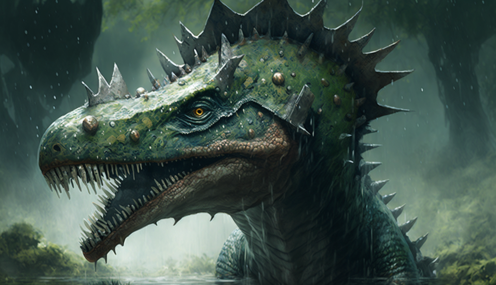

Tiere
Öffnungszeiten & Preise
Restaurante
Karte
Rechtliches
Unsere Tiere
Unsere Spinosaurier
Name: Bruno
Höhe: 6m
Länge: 16m
Gewicht: 8'000kg
Alter: 17
Apr 16
Bruno ist ein großer, kräftiger Spinosaurus mit einer Länge von bis zu 16 Metern. Sein beeindruckender Kamm auf dem Rücken setzt ihn deutlich von anderen Dinosauriern ab. Sein muskulöser Körper und seine kräftigen Beine ermöglichen ihm schnelles Laufen und auch Schwimmen im Wasser. Seine scharfen Zähne und seine kraftvolle Schnauze machen ihn zu einem gefährlichen Jäger. Trotz seiner imposanten Erscheinung ist Bruno jedoch auch vorsichtig und scheu, und vermeidet unnötige Konfrontationen.

Name: Elodie
Höhe: 5m
Länge: 14m
Gewicht: 8'000kg
Alter: 15
May 19
Die weibliche Spinosaurus Eolodie ist eine imposante Erscheinung. Sie ist 14 Meter lang und 5 Meter hoch. Ihr Körper ist von kräftigen Muskeln umgeben und von einer dicken Haut bedeckt. Ihr Hauptmerkmal ist jedoch ihr riesiges Segel, das auf ihrem Rücken thront. Das Segel wird von langen Stacheln gestützt und diente möglicherweise zur Regulierung der Körpertemperatur und zur Imponierung von Rivalen oder potenziellen Partnern. Eolodie ist eine Jägerin und ernährt sich von Fischen und anderen Dinosauriern, die sie mit ihren mächtigen Zähnen und Krallen erlegt.
nach oben
Allosaurus
Anklyosaurus
Brachiosaurus
Coelophysis
Mososaurus
Rex
Spinosaurus
Stegosaurus
Triceratops
Velociraptor